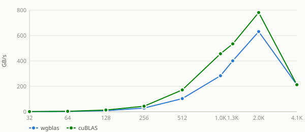

Benchmark results for sdot on Nvidia Geforce Rtx 4060 Laptop Gpu.
Efficiency = wgblas GB/s ÷ cuBLAS GB/s × 100. 100% means parity with cuBLAS; values above 100% mean wgblas achieved greater throughput.

Benchmark results for sdot on Nvidia Geforce Rtx 4060 Laptop Gpu.
Nvidia Geforce Rtx 4060 Laptop Gpu — wgblas vs cuBLAS

See also